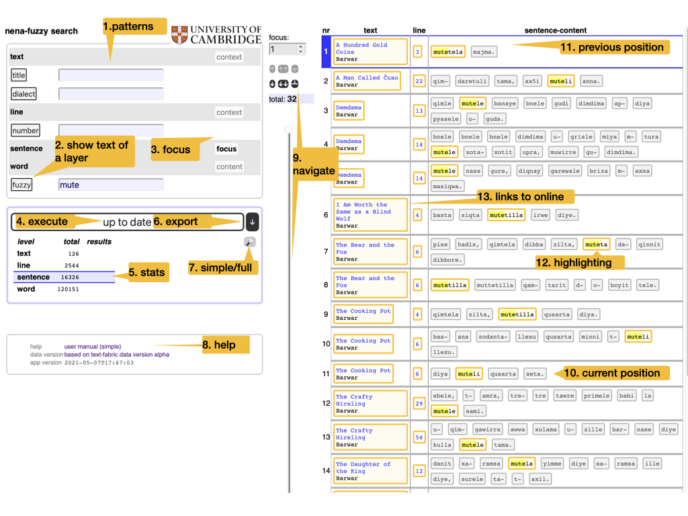

Module tf.about.manual
Search manual

- 1. patterns
-
You can search the corpus by means of patterns. Several patterns work together at different levels of the corpus. When all patterns match, we have a result. All results will be listed in the table on the right.
A pattern can be as simple as a word, and then it will find all occurrences of that word. But they can be way more sophisticated than that. See Search patterns below for a crash course.
See Meaning below for what the meaning is of multiple patterns working together.
- 2. show text of a layer
- You can click on the name of each layer to show and hide the full text of that layer. So that you know the material in which you are searching.
- 3. focus
-
The level in the corpus that corresponds with a single row in the results table. For example, if you put focus on
sentence, the results will be organized by sentence.More or less context
By changing focus, you will see more or less context around the results.
- 4. execute
- Whenever you change a pattern, the search results will be updated. But you can also press this button to run the search again.
- 5. stats
- How many results there are at each level, compared to the total size of the corpus.
- 6. export
- Export the search results as a tab-separated file (
.tsv). This file can be opened in Excel. All results are exported, not only the ones that show on the current page. The level of detail depends on the currently selected focus level. - 7. options
- Switch between the simple interface and the full interface.
There is a separate manual for the full interface:
tf.about.clientmanual. - 8. help
- Help and info.
- 9. navigate
-
Walk through the results in various ways:
- manual entry of the position number,
- small jumps back and forth,
- big strides with the slider.
If you do this often: there are handy keyboard shortcuts. See below.
- 10. position
- The current position in the results table is marked.
- 11. previous position
- The previous position in the results table is also marked, in a slightly less conspicuous way.
- 12. highlighting
-
The portions in the layer that match the corresponding pattern are highlighted.
Caution
When you export results, the highlight information is lost.
Hint
There is an option to retain highlight information in exports. For that you have to use the full interface.
- 13. links to online
- The top level layers are linked to an online representation of the corpus. For example, for NENA it is the GitHub repository where the source texts are stored. For the BHSA it is SHEBANQ.
Search patterns
Here is a crash course in increasingly complex search patterns. We only give examples and a bit of explanation.
- Simple words
-
muteis a pattern that matches all occurrences of the stringmute. Case is not important, and it does not have to be a whole word.hint !!! "Case sensitive search" If the case of letters is important, use the full interface, where you can switch it on and off.
- Word boundaries
-
We can reckon with word boundaries:
\bmute\bmatchesmutebut only if it is a separate word.\bmutematches words that start withmutemute\bmatches words that end inmute
- Line boundaries
-
We can reckon with line boundaries:
^mute$matchesmutebut only if it occupies a complete line;^mutematches occurences ofmuteat the start of a line;mute$matches occurrences ofmuteat the end of a line.
match literally
You can take these special characters literally by using
\$and\^. - Wildcard
-
m.tematchesmate,mbte,mcte,m,te,m te, etc.The
.matches any character, except a newline.newline
To match a newline, use
\n - Small variations
-
m[aeiou]tematchesmate,mete,mite,mote,mute.With
[ ]you can define a character class. Everything in the class is matched.There are more possibilities:
[0-9]matches all single digits[a-z]matches all single letters[p-w]matches all single letters betweenpandw(including)[a-ep-w:;!?]matches the lettersatoe,ptow,:,;,!, and?.[a-e-]matches the lettersatoeand-. (The-should be right before the]).[^aeiou]matches every character other than a vowel[(){}\[\]]matches the letters(,),{,},[, and]. Note that you have to use \ in front of the[and]to undo their special meaning.
- Smaller variations
mute|nasematches eithermuteornase.- Grouping
-
We can group patterns
mu(t|r)ematchesmufollowed by eithertorr, followed bye(^|a)mutematchesmuteat the start of a line, oramute
- Repetitions
-
We can specify that a pattern should match a number of times:
?means 0 or 1 times:p[aeiou]?rmatches apfollowed by an optional vowel, followed by anr.+means 1 or more times:p[aeiou]+rmatches apfollowed by at least one vowel, possibly more vowels, followed by anr.*means arbitrary many times:p[aeiou]*rmatches apfollowed by any number of vowels, possibly none at all, followed by anr.{3,7}means at least 3 and at most 7 timesma{3,7}tmatches anm, then 3-7as, and then at.{3,}means at least 3 timesma{3,}tmatches anm, then at least 3as, and then at.{,7}means at most 7 timesma{,7}tmatches anm, then at most 7as, and then at.
The quantifiers
?,+,*try to make as many repetitions as the text admits. But you can reign them in so that they make as few repetitions as possible, by putting a?behind them:??,+?,*?.Suppose we search the string
mute aaaa nase bbbb nase ccccmute .* nasematchesmute aaaa nase bbbb nasemute .*? nasematchesmute aaaa nase
However:
mute .* nase bbbbmatchesmute aaaa nase bbbb
Initially, the
.*takes us to the secondnase, but the pattern wants abbbbat the end, so it has gone to far and it will, reluctantly, backtrack, until the match is found.mute .*? nase ccccmatchesmute aaaa nase bbbb nase cccc
Initially, the
.*?takes us to the firstnase, but the pattern wants accccat the end, so it has gone not far enough and it will, reluctantly, go further, until the match is found. - Combining
-
By using the constructions we have so far, we can specify ever more complex patterns.
\b[^aeiou]{2}[aeiou][^aeiou]+\bmatches a word consisting of exactly 2 consonants, one vowel, and then one or more consonants.\b([^aeiou][aeiou][^aeiou]|[^aeiou]{2}[aeiou][^aeiou]{2})\bmatches a word of shape CVC or CCVCC.
If there is more than one group, you can refer to them by
\1,\2, etc. - More power
-
Groups between
( )have memory. If something is matched by it, you can reuse is later in the pattern. If we have one pair of( ), then\1refers to whatever that group matched.([^aeiou])\1matches twice the same consonant, no matter which one([^aeiou])\1{3}matches 4 times the same consonant. This will find words such asxirrrr.(\b([a-z]+)\b).*?\b\1\bfinds twice the same word in a sentence
Note that
[^aeiou]{4}will find 4 consonants, but they do not have to be the same. - Ultimate power
-
This is not all. Much more can be done with patterns. The full story is here:
Meaning
Levels
Your corpus is divided into levels, e.g. text/line/sentence/word/.
At each level there are objects in the corpus and they can be represented in certain ways:
- text are represented by their titles;
- lines are represented by their numbers;
- words are represented by the strings of which they are composed.
Combined search
In order to search, you specify search patterns for as many of the available layers as you want.
When the search is performed, all these layers will produce results, and the results in one layer will be "intersected" with the results in all other layers.
Beware of complicated criteria
Before you devise sophisticated criteria, note that this search engine is not very refined in taking intersections. It takes the intersections of the joint results of the matches in the layers. It will not take the intersections of the individual matches.
The bottomline is: use the search tool to grab the things that are potentially of interest. If you need to pinpoint further, export the results to Excel and use other tools/methods to achieve that.
If you need more information in this, consult the
manual for the full interface: tf.about.clientmanual.
Export
You can export the search results to Excel (or rather, a tab-separated file, .tsv).
When you do that, all results will get exported, not only the ones that show
on the interface.
The organization of the exported results reflects the interface. Here are screenshots of an export where the focus is on sentences, and one with the focus on words. Observe the different amount of context in the export.

Keyboard shortcuts
Keyboard shortcuts need to be pressed with modifier keys. It depends on your browser which ones. Here is the list, by browser and platform:
| browser | Windows | - | Linux | - | Mac |
|---|---|---|---|---|---|
| Firefox | Alt + Shift | Alt + Shift | Ctrl + Option | ||
| Chrome | Alt + Shift | Alt | Ctrl + Option | ||
| Edge | Alt + Shift | Ctrl + Option | |||
| Safari | Ctrl + Option |
Having figured that out, you can use those modifier keys together with a letter to perform the following actions:
| shortcut | action |
|---|---|
n |
next position |
p |
previous position |
b |
back a batch |
f |
forward a batch |
s |
start |
e |
end |
m |
manually type the position in the box |
Expand source code Browse git
"""
.. include:: ../docs/about/manual.md
"""